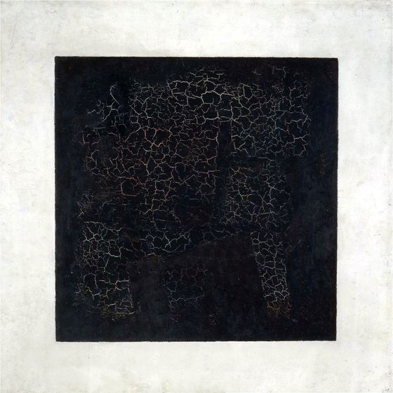

Авангард (искусство)
Материал из Википедии – свободной инциклопедии
Аванга́рд (фр. avant-garde — передовой отряд), авангарди́зм — обобщающее название течений в мировом, прежде всего в европейском искусстве, возникших на рубеже XIX и XX веков.
История термина
Слово французского происхождения авангард первоначально относилось исключительно к военной терминологии и означало отряд, выдвигающийся вперёд по движению войска; передовой отряд. В годы Французской революции это слово стало революционной метафорой и в 1794 году вошло в название якобинского журнала. С тех пор политический смысл начал вытеснять военный.
Термин в его фигуральном значении использовался в работах французских социалистических утопистов. В их же работах термин впервые получил следующий, художественный смысл — основатель школы утопического социализма Анри Сен-Симон в статье «Художник, учёный и рабочий», вышедшей в год его смерти в 1825 году, в союзе художника, учёного и рабочего ведущую роль отвёл художнику. Художник, по Сен-Симону, наделён воображением и должен воспользоваться силой искусства для пропаганды передовых идей: «Это мы, художники, будем служить вам авангардом».
Долгое время термин сохранял своё политическое значение, а художник наделялся особой политической миссией. В этом значении термин начал усваиваться в других европейских языках. Так, в английском языке слово vangard в его фигуральном значении впервые появилось в работах британского историка Томаса Карлейля.
Последователи Сен-Симона, продолжая вслед за ним акцентировать ведущую роль художника в политических процессах, фактически оставляли в стороне социальные цели искусства, обязывающие его быть утилитарным, дидактическим, понятным широким массам, и тем самым парадоксально сближали политический авангард с «искусством ради искусства» (фр. l'art pour l'art) как революционной идеей.
В последние десятилетия XIX века термин авангард в его милитаристском значении получил широкое распространение в Европе благодаря популярности анархических идей Михаила Бакунина и Петра Кропоткина. Кропоткиным восхищались хорошо его знавшие Оскар Уайльд и Уильям Батлер Йейтс. Кропоткин оказал большое влияние на Герберта Рида. Бакунин и Кропоткин не только использовали термин в своих работах, но в 1877 году дали название L’Avant-Garderude своей газете.
Последователи Бакунина начали применять название журнала к искусству, а в 1885 году Теодор Дюре перенёс термин авангард из области политики в область художественной критики. Интересно, что ещё раньше, в 1871 году, семнадцатилетний французский поэт Артюр Рембо в частной переписке, ставшей публичной значительно позже, писал, что поэзия должна создать совершенно новый язык, объединяющий задачи политического и художественного авангарда; именно это позволит ей быть впереди.
Термин авангард в его художественном значении, таким образом, полностью вышел из утопических и анархических идей и в начале XX века был тесно связан с политикой. Присущий художественному авангарду уже как историческому явлению (первая треть XX века) политический радикализм был ему свойствен вплоть до 1930-х годов.Как историческое явление авангард появился только в начале XX века, но ни одно движение, группа или школа не включали термин авангард в своё название, а главное — этим термином не оперировала критика. Термин авангард (как прежде романтизм или реализм) не был для группировок самоназванием, а начал употребляться, когда сами группировки уже распались, и то, что их связывало, завершалось или уже стало историей. Потребность в обобщённом терминологическом закреплении деятельности многочисленных групп возникла в 1920-х годах, и английский поэт Роберт Грейвз в 1927 году противопоставил модернистскую поэзию викторианской.
В 1929 году французский поэт, один из основателей сюрреализма, к этому времени ставший коммунистом, Луи Арагон, имея в виду слова са́мого «авангардистского» символиста Артюра Рембо «Il faut être absolument moderne» («Надо быть абсолютно современными»), ввёл объединяющий термин модернизм. Авангард (авангардизм) в роли аналогичного объединяющего термина появился позже. Наиболее активно авангард как литературно-художественное движение стал обсуждаться в ретроспекции после Второй мировой войны.
Спустя столетие с лишним после появления авангарда как исторического явления, теории и типологии авангарда (так же, впрочем, как и теории и типологии модернизма) не существует. Кристофер Иннес в предисловии к своей книге «Театр авангарда» (1993) предупреждает, что термин авангард «стал вездесущим ярлыком, эклектически прикрепляемым к любому виду искусства, лишь бы оно было антитрадиционным по форме. Иногда этот термин упрощённо используют для определения нового в любой данный момент, которое устаревает с каждым новым шагом вперёд».
Различия понятий модернизм и авангард
Из-за того, что до сих пор не существует теорий и типологии модернизма и авангарда (авангардизма) как литературно-художественных явлений, разброс мнений о соотношении двух этих понятий варьируется от их полного противопоставления до полной взаимозаменяемости.
В академическом искусствознании, соответствующих справочниках и энциклопедиях понятия «модернизм» и «авангард», как правило, отождествляют[9]. Между тем, существуют иные определения: «Авангардизм — обобщенное название экспериментальных идей, концепций, течений, школ, творчества отдельных художников, преследующих цель создания нового искусства, не имеющего связей со старыми, путем отрицания исторической традиции и преемственности творчества». Модернисты также стремятся к обновлению искусства, но, в отличие от авангардистов, считают необходимым не отрицать, а продолжать художественные традиции. В представлении модернистов «авангард представляет собой пройденный этап и даже своеобразную новую классику, которую следует, как и старую классику, развивать, а не опровергать». Авангардизм кратковременен, он проявляется лишь в переломные моменты истории; модернизм перманентен, он отражает постоянное стремление к совершенствованию художественной формы.
Философ В. П. Руднев следующим образом разъяснял различия понятий «модернизм» и «авангард»: «Авангард невозможен без скандала, эпатажа…Модернизм рождает новое исключительно в сфере художественной формы, в сфере художественного синтаксиса и семантики, не затрагивая сферу прагматики… Для модернистов характерна серьёзная, углублённая работа над формой, не терпящая суеты, внешних эффектов и популистских или скандальных акций, привлекающих внимание публики. Модернисты работают скромно, уединенно, в тишине своих мастерских, и их эксперименты рассчитаны на медленное, постепенное усвоение избранным, узким кругом знатоков…Типичный модернист и типичный авангардист представляли собой совершенно различные характерологические радикалы. Вот типичные модернисты: сухопарый длинный Джойс, изнеженный Пруст; маленький, худой, как будто навек испуганный, Франц Кафка; длинные, худые Шостакович и Прокофьев; сухой маленький Игорь Стравинский. Все это шизоиды-аутисты, замкнутые в своем эстетическом мире. Невозможно их представить на площади или на эстраде эпатирующими публику… А вот авангардисты. Агрессивный, с громовым голосом, атлет Маяковский, так же атлетически сложенный, „съевший собаку“ на различного рода скандалах Луис Бунюэль; самовлюбленный до паранойи и при этом рассчитывающий каждый свой шаг Сальвадор Дали».
В России и СССР
По мнению искусствоведа Ирины Вакар, на русской почве «создателем термина был знаменитый художник и критик Александр Бенуа. Весной 1910 года в рецензии на выставку Союза русских художников он разделил всех участвовавших в ней живописцев на авангард, центр и арьергард. Причислив себя и своих друзей из „Мира искусства“ к центру, он иронически назвал авангардом нескольких молодых москвичей во главе с М. Ларионовым, по его мнению, слишком далеко зашедших вперед по пути разрушения принятых норм в искусстве. Прогноз Бенуа оказался верным, а термин утвердился, хотя и спустя много лет».
В 1915 году Николай Бердяев в статье «Астральный роман» предположил по поводу Пабло Пикассо и романа «Петербург» Андрея Белого, что «во время Первой мировой войны авангардное искусство перестало существовать, передав продолжение своих новшеств истории как таковой».
В советском искусствоведении, под влиянием книг Дьёрдя Лукача «Значение современного реализма» и «Идеология модернизма», вплоть до конца 1980-х годов модернизм (авангард) трактовался как «антиреализм», а реализм, соответственно, как «антимодернизм». (Как «антиреализм» в оппозиции реалистического и нереалистического художественных «методов» понимался даже романтизм, к изучению которого советское литературоведение смогло вернуться только в конце 1950-х годов).
В постсоветское время, в 2010 году, Анатолий Осмоловский говорил об авангарде: «…В России авангардное искусство в массе воспринимается крайне упрощённо, вульгарно. Снял штаны, показал жопу — вот и авангард».
Протоавангард
Началу эпохи авангарда, которое большинство исследователей относят к 1905—1907 годам, предшествовал период протоавангарда — когда поэтика авангарда проявляла себя на уровне тенденции: в символизме, югендстиле, русском космизме; в манифестациях, подобных «Крику» (1893) Эдварда Мунка.
Период протоавангарда рубежа XIX—XX веков характеризуется как слом, переход от классической эстетики Аристотеля, мимесиса, к неклассической, антиаристотелевской традиции.
Свидетель и участник этого слома, ирландский англоязычный поэт Уильям Батлер Йейтс в 1897 году писал о происходящем:
…Реакция на рационализм восемнадцатого века смешалась с реакцией на материализм девятнадцатого века, и символистское движение, которое достигло совершенства у Вагнера в Германии, у прерафаэлитов в Англии, у Вилье де Лиль-Адана, Малларме и Метерлинка во Франции и пробудило воображение Ибсена и Д’Аннунцио — безусловно единственное движение, говорящее новые вещи.
Авангардистские течения в искусстве
Авангард в изобразительном искусстве
В истории изобразительного искусства авангард чаще интерпретируют как художественное направление начала XX века, тесно связанное с модерном и модернизмом. В таком широком понимании к авангарду относят:
- Фовизм
- Абстрактный эмпрессионизм
- Баухауз
- Беспредметность